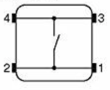
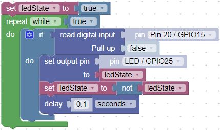
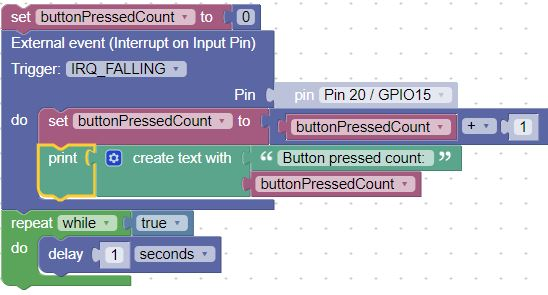
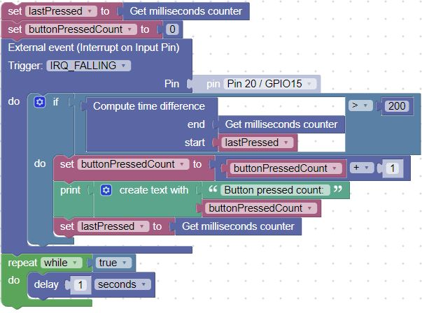

Button
In this lesson we will hook a single momentary push button up to our Raspberry Pi Nano. We will use it to toggle the built-in LED. We will start out with simply polling the button 10 times a second to check it's state. Then we will show how to use an interrupt handler function to monitor events from the button.

In the example above, we are connecting the button on the left to the lower-left corner pin of the Raspberry Pi Pico. This is GPIO Pin 15 and is in row number 20 of our breadboard.
Momentary Switch Buttons

We use "B3F" tactile switch buttons that can be mounted directly on our breadboards. When the button is pressed, it connects a wire that joins two pins on one side to the two pins on the other side. The buttons can be mounted directly over the trough in the center of the breadboard. They typically cost under $2 for 10 buttons or about 20 cents per button.
 Here are the internal connections within the switch.
 This is the connection diagram that shows how the button is connected to the GPIO connector in the lower-left corner of the Raspberry Pi Pico. This corresponds to GP15 or Pin #15 in our code.
This is the connection diagram that shows how the button is connected to the GPIO connector in the lower-left corner of the Raspberry Pi Pico. This corresponds to GP15 or Pin #15 in our code.
Sample Button Polling Code
Here is our fist example that uses a simple "watching" loop to check if the button value has changed 10 times per second. In this case, the built-in LED is connected to pin 25.

Interrupt Handler Version
Although the polling version is simple, it does take a lot of the CPU resources. The button.value() is checked 10 times a second, even though the button might only be pressed once a day!
A more efficient version uses a strategy called an interrupt handler. This is a function that is "registered" by micropython to handle external events such as a button press.

You can see the count of button presses in the console.
Interrupt Handler with a Debounce Feature
One of the problems with most switches is that they don't turn on and off perfectly each time. As the connection is getting close to closing some electrons jump the gap and the switch appears to turn on for a few microseconds. So to a computer, this looks like someone quickly pressing a button rapidly until it is firmly closed or completely open. This intermediate stage between completely open and closed is called the "bounce" stage of a switch opening and closing.

To remove this problem and get a clean signal, we can use either a hardware solution (wiring a capacitor to remove the high frequency noise) or we can be clever and solve the problem with a few extra lines of code.
The secret is to setup a timer when the switch is first closed or opened. We then ignore all the crazy stuff that happens for about 1/5th of a second (200 milliseconds). By then we usually have a solid indication that the button is changing state and we can return the new value.
Here are the blocks of this "Debounce" code:
